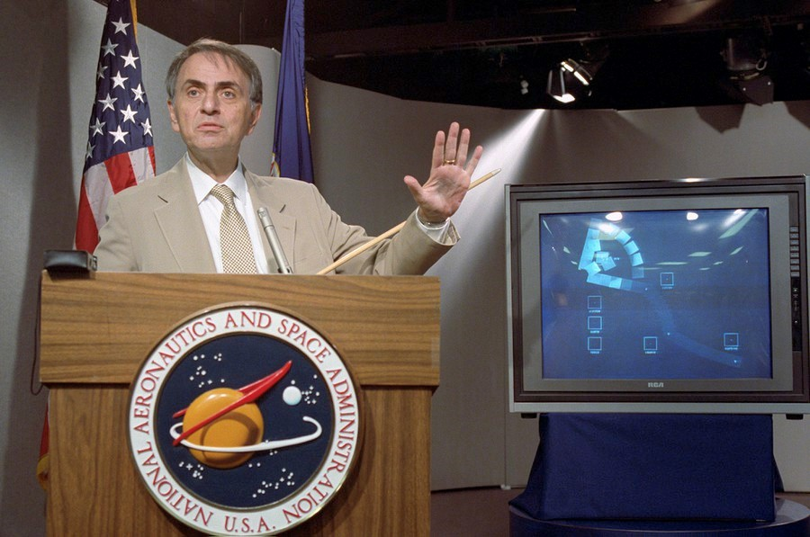
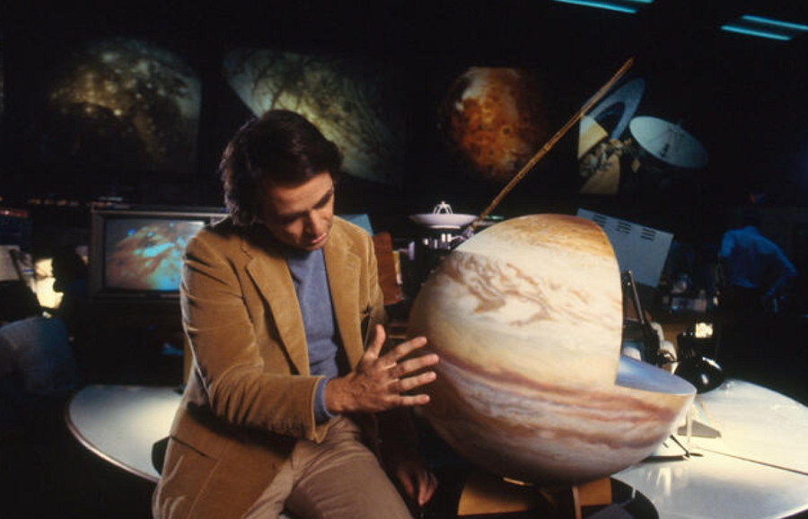
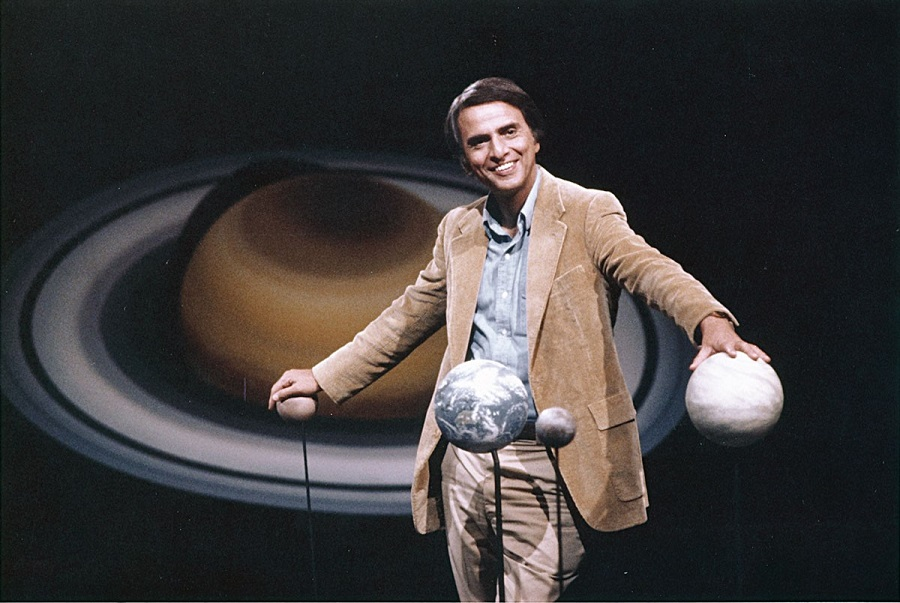

Carl Sagan (1934 - 1996) played a leading role in the American space program from its very beginning. He was a consultant and adviser to NASA beginning in the 1950s -- he briefed the Apollo astronauts before their flights to the Moon.
Carl was born in New York City on November 9, 1934. He described himself as a childhood science fiction addict who became fascinated by astronomy when he learned that every star in the night sky was a distant Sun. He was always encouraged by his parents to research answers to his innumerable questions about science. His scientific curiosity led him to earn four degrees in physics, astronomy and astrophysics from the University of Chicago.

Carl Sagan speaks at a news conference where NASA made available the last pictures taken by Voyager 1, which show the solar system as a "family portrait" viewed from the outside.
In his role as a visiting scientist at the Jet Propulsion Laboratory (JPL) in Pasadena, Calif., Carl helped design and manage the Mariner 2 mission to Venus, the Mariner 9 and Viking 1 and Viking 2 trips to Mars; the Voyager 1 and Voyager 2 missions to the outer solar system and the Galileo mission to Jupiter. Carl's research helped to solve the mysteries of the high temperature of Venus (a massive greenhouse effect), the seasonal changes on Mars (windblown dust) and the reddish haze of Titan (complex organic molecules).
Carl was often described as "the scientist who made the Universe clearer to the ordinary person." He helped to popularize science through the writing of hundreds of articles and over two dozen books. He won a Pulitzer Prize in 1975 for his book "The Dragons of Eden." His television series "Cosmos" was one of the most watched shows in public television history. It was seen by more than 500 million people in 60 different countries.

Carl Sagan filming "Cosmos"
Carl taught and conducted research at Harvard University. In 1968, Carl became a professor at Cornell University where he was also the director of the Laboratory for Planetary Studies. He was well known as a pioneer in the field of exobiology, which is the study of the possibility of extraterrestrial life. He was among the first to determine that life could have existed on Mars. And he constantly appealed to NASA to extend its exploration of the Universe.
With Louis Friedman and Bruce Murray, Carl founded The Planetary Society, a public membership organization, in 1980 which inspires, informs, and involves the public in the wonders of space exploration. The organization is also instrumental in influencing government decisions regarding spaceflight funding through its grassroots campaigns.

Carl Sagan with the planets
"Carl was one of the greatest intellects behind the genesis of space exploration generally and specifically the Galileo mission," said Dr. Torrence Johnson, a Galileo mission team member. "He was part of the original group that got together to promote the mission to NASA and he served as an interdisciplinary scientists on the mission team from the beginning. He was a great human being who shared with everyone his excitement about the exploration of the Universe."
Carl suffered from a rare bone marrow disease called myelodysplasia. Complications from this disease caused the pneumonia which ended his life on December 20, 1996. He was 62.